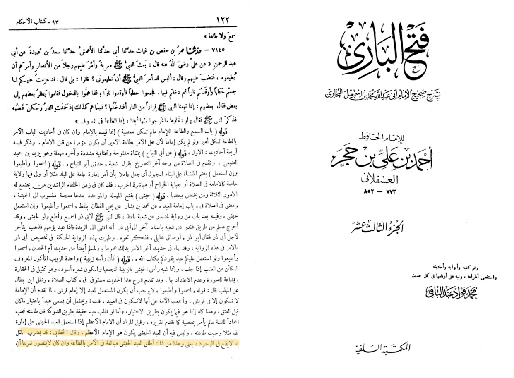
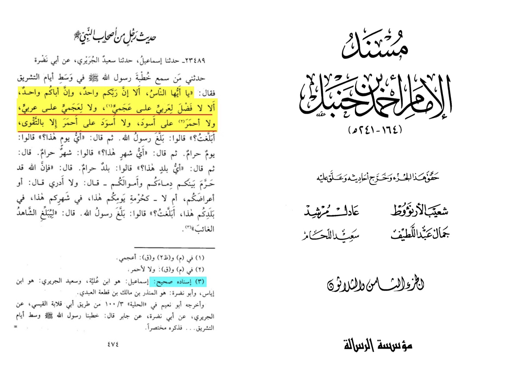
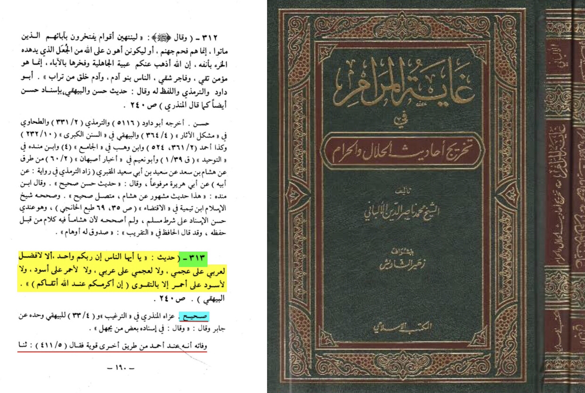

Translation: “And al-Khattibi said it could be used as an expression for anything else ,
here he used the “Ethiopian” as it isn’t reasonable according to the sharia (law) that that happens
[due to the period of preislamic ignorance people saw them as inferior the moral of the hadith is listen to the ruler
whoever he is]”
-Source: Fathul-bari sharh Sahih al-Bukhari ibn Hajar al-asqualani (RH) volume 13 page number 122
explaining hadith number 7142 print of Salafiyah library
Prophet muhammed also said
“ Narrated Jabir bin Abdullah: the prophet Said: There is no favor for an Arab over Ajami, nor for Ajami over an Arab,
nor for white over black, nor for black over white only by taqwa (worship to God)”
-Source: shu’ab al iman Al-Bayhaqui 5137 and Al-Albani in Ghalya Al-Maram 313 and
Halyaa al-awliyaa Abu na’im volume 3 page number 100 and musnad ahmed volume 5 page number 411
Grade: Sahih (authentic) (Darussalam) and (Al-Albani)

Now if I say listen and obey your teacher even if he was stupid does that mean any disrespect no it is insisting
to obey him the hadith is the opposite of what u think
Hadith of the day #1
“ Narrated Jabir bin Abdullah: the prophet Said: There is no favor for an Arab over Ajami, nor for Ajami over an Arab,
nor for white over black, nor for black over white only by taqwa (worship to God)”
-Source: musnad ahmed volume 38 page number 474 narration number 23489
Grade: Sahih (authentic) (Darussalam) (shu’ayb al-arna’ut) and (Al-Albani) in ghayat al-maram page number 190 narration number 313


“O believers! Do not let some ˹men˺ ridicule others, they may be better than them, nor let ˹some˺ women ridicule
other women, they may be better than them. Do not defame one another, nor call each other by offensive nicknames.
How evil it is to act rebelliously after having faith! And whoever does not repent, it is they who are the ˹true˺
wrongdoers.”
-Source: Qūr’ān 49:11
“O humanity! Indeed, We created you from a male and a female, and made you into peoples and tribes so that you may
˹get to˺ know one another. Surely the most noble of you in the sight of Allah is the most righteous among you.
Allah is truly All-Knowing, All-Aware.”
-Source: Qūrān 49:13
The Hadeeth means that the black color is not an impediment or a defect but rather that obedience is obligatory to a black ruler,
as it is to a non-black one, as soon as he assumes authority. The basic requirement is that he governs the affairs
of people in accordance
with the Sharee‘ah of Allaah, The Exalted. The Prophet, sallallaahu ‘alayhi wa sallam, said in the Farewell Hajj:
"If a black slave with a mutilated nose
is appointed to govern you, and he leads you according to the Book of Allaah the Exalted, then listen to him and obey."
[Muslim] An-Nawawi said: "Scholars underlined that the Hadeeth
means that as long as the Muslim ruler adheres to the teachings of Islam and calls people to the Book of Allaah,
it is incumbent on Muslims to obey him."
Also, the Hadeeth does not suggest that all black people have raisin-like heads; rather, it means that Muslims are
obliged to obey the Muslim ruler placed in authority over them even if he looks like that.
https://m.youtube.com/watch?v=rBAWmG3K97w&t=302s